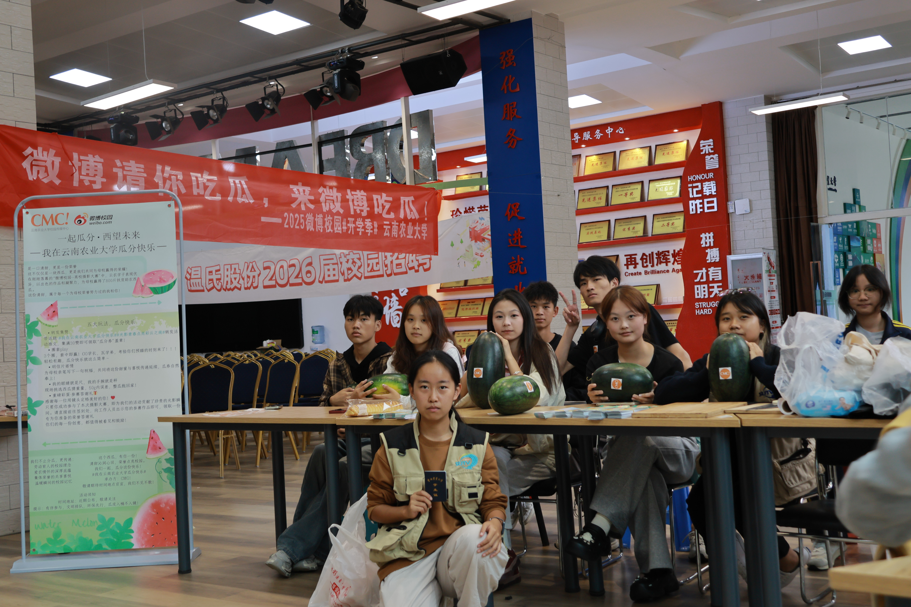
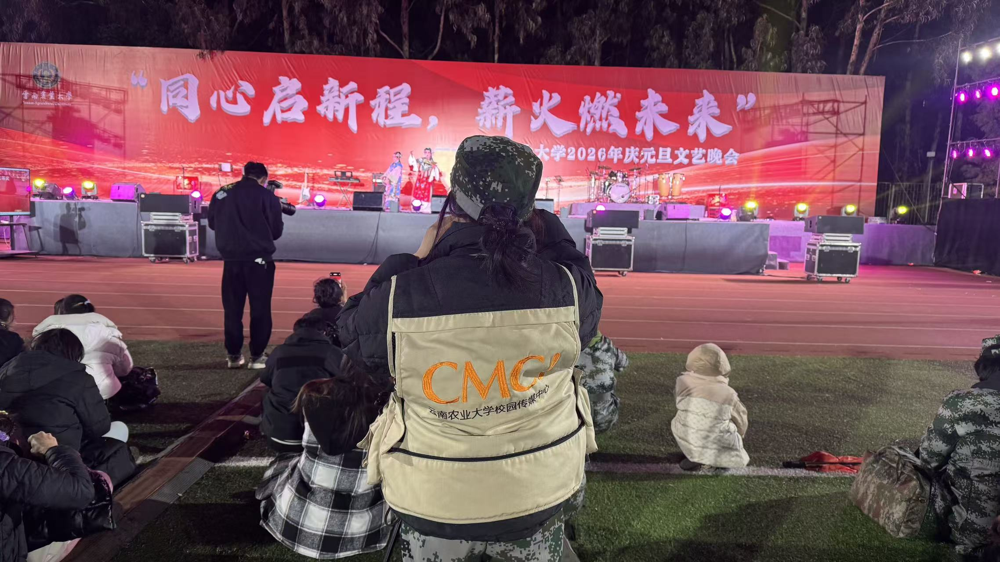
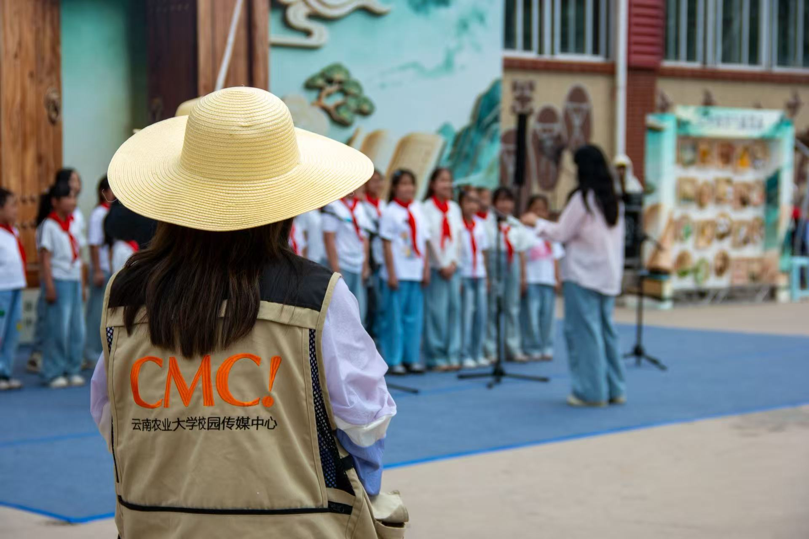
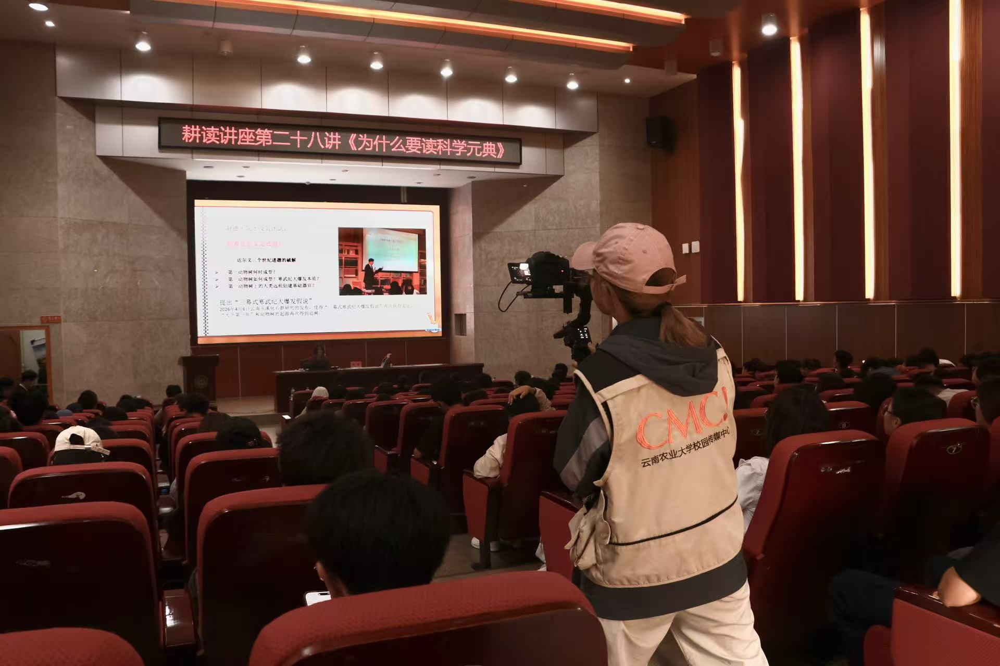
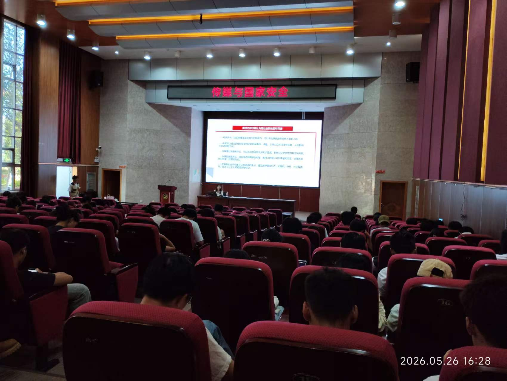
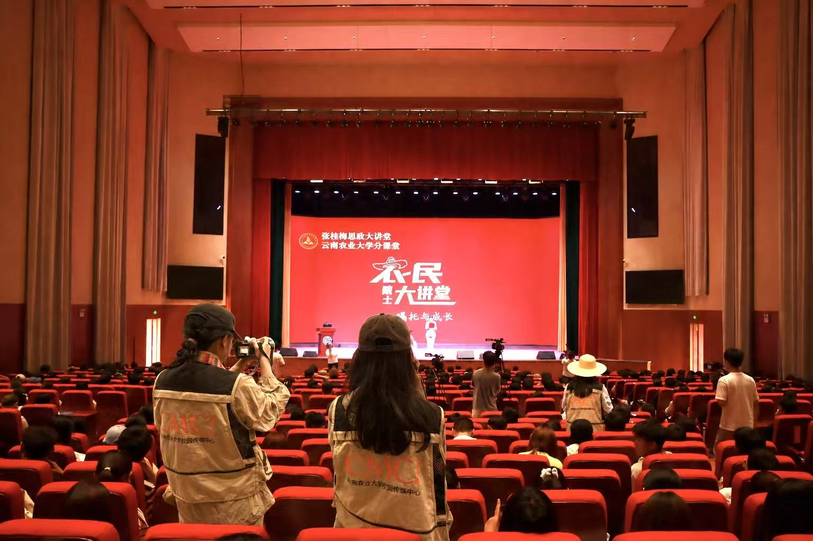

运营部
OPERATIONS
负责学校官方账号运营、图文编辑排版、内容策划推送，挖掘校园热点并产出优质推文。

ABOUT
以镜头记录校园
用传播连接师生
校园传媒中心以校园新媒体内容生产与传播为主要工作方向，负责学校官方账号运营、校园新闻图文编辑、活动影像拍摄和原创视听创作，持续记录校园生活、服务师生沟通。
中心长期承担学校官方新媒体平台的内容生产任务，围绕校园新闻、活动纪实、原创短视频等方向持续产出优质内容，用图文与影像记录云南农业大学的师生故事与校园风采。
中心下设运营部、行政部、节目部三大职能部门，覆盖内容策划、账号运营、影像拍摄、视频剪辑、活动组织等完整工作链条，分工清晰、协同高效。
以传媒之力记录校园，以专业之姿服务师生，让云农故事被更多人看见。
DEPARTMENTS
三大部门协同，覆盖内容生产全链条
OPERATIONS
负责学校官方账号运营、图文编辑排版、内容策划推送，挖掘校园热点并产出优质推文。
ADMINISTRATION
负责活动策划组织、学分登记、经费管理与资源协调，保障各项工作有序开展。
PROGRAM
统筹主播、编导、摄制工作，完成短视频及校园事件的拍摄编辑与内容策划。
MOMENTS
镜头里的传媒日常
ACTIVITIES
校园活动的影像纪实与传播

1 / 3中心承办微博校园高校摄影大赛，组织同学发布校园照片参赛，为学校赢得扶贫助农西瓜并开展分发活动，以镜头为公益助力。

1 / 3中心全程负责“同心启新程 薪火燃未来”元旦文艺晚会拍摄纪实，记录节目、校领导寄语与师生集体共舞等校园画面。
查看报道 → 1 / 2
1 / 2

1 / 4
1 / 3 1 / 2
1 / 2

1 / 2社团负责讲座全程纪实拍摄和线上推送，向师生科普新媒体传播安全知识。

1 / 2